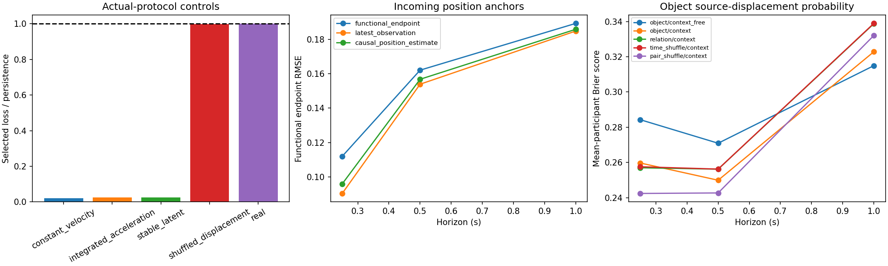

Retrospective source targets. Existing point-forecast gate unchanged. No promotion or independent physical-event claim.

The actual protocol learns controlled motion. Hand-history source-displacement probabilities improve Brier score on both validation participants; object results are mixed at longer horizons. Corrected relations do not establish an added association benefit. Latest-observation incoming anchors improve functional endpoint diagnostics. These are separate from the unchanged mean-position benchmark.
probability_protocol_results.json
probability_per_participant.parquet